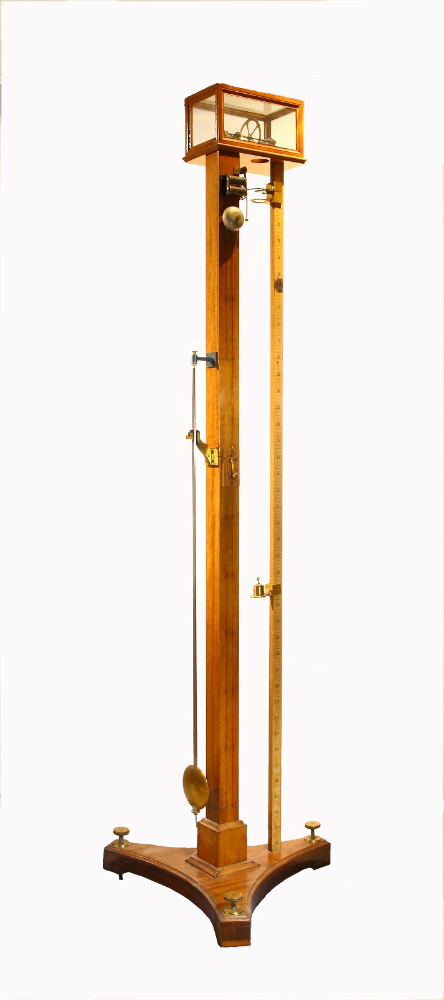

Macchina di Atvood
Scuola di provenienza: Istituto agrario "F. De Sanctis", Avellino
Settore: Meccanica
Costruttori: Sconosciuto
Materiali: Legno, ottone, vetro
Accessori: Pesetti
Stato di conservazione: Buono, a parte la ruggine e la laccatura dell´ottone corrosa
Descrizione: Per la dimostrazione sperimentale delle leggi del moto di caduta dei gravi si può ricorrere con risultati molto soddisfacenti alla macchina di Atwood, così detta dal nome del suo inventore professore di chimica in Cambridge. La sua parte essenziale consta di una puleggia leggera mobile intorno al proprio asse, nelle cui gole scorre un filo di seta sottilissimo, ma resistente, alle estremità del quale sono attaccate due masse di eguale peso che stanno in equilibrio in tutte le posizioni essendo trascurabile il peso del filo. Quest´apparecchio è collocato sopra una mensola portata da una robusta colonna; due fori praticati sulla mensola in posizione opportuna danno passaggio libero ai fili che sostengono le masse Q e Q´. Gli spazi percorsi vengono misurati sopra un regolo verticale posto di fianco, diviso in centimetri ed in millimetri. Il sistema è in equilibrio indifferente. Se si aggiunge un corpo N sul peso Q´, lì equilibrio non sussiste più, la forza motrice è il peso del corpicciuolo N. Il corpo Q´ discende di moto uniformante accelerato, sollevando contemporaneamente Q. L´inizio del moto in studio avviene nell´istante preciso in cui si produce uno dei battiti del pendolo unito alla macchina. L´esperienza dimostra che se nel tempo t=1 lo spazio percorso è s,nel tempo t=2 lo spazio percorso è 4 s, nel tempo t=3 lo spazio percorso è 9 s e così di seguito, ossia che gli spazi stanno tra loro come i quadrati dei tempi impiegati a percorrerli. Dunque il moto di tutto il sistema sotto l´azione della forza motrice del peso p è uniformante accelerato.